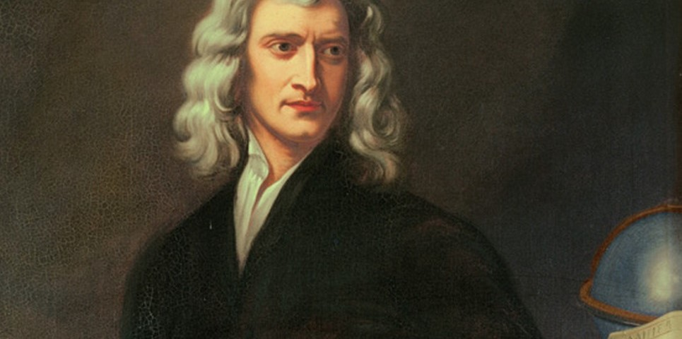

by Anthony
Postado em 1 de Janeiro, de 2019 às 12:00
Isaac Newton, foi um astrônomo, alquimista, filósofo natural, teólogo e cientista inglês, mais reconhecido como físico e matemático. Sua obra, Princípios Matemáticos da Filosofia Natural é considerada uma das mais influentes na história da ciência. Publicada em 1687, esta obra descreve a lei da gravitação universal e as três leis de Newton, que fundamentaram a mecânica clássica. Ao demonstrar a consistência que havia entre o sistema por si idealizado e as leis de Kepler do movimento dos planetas, foi o primeiro a demonstrar que os movimentos de objetos, tanto na Terra como em outros corpos celestes, são governados pelo mesmo conjunto de leis naturais. O poder unificador e profético de suas leis era centrado na revolução científica, no avanço do heliocentrismo e na difundida noção de que a investigação racional pode revelar o funcionamento mais intrínseco da natureza.
Newton construiu o primeiro telescópio refletor operacional e desenvolveu a teoria das cores baseada na observação que um prisma decompõe a luz branca em várias cores do espectro visível. Ele também formulou uma lei empírica de resfriamento e estudou a velocidade do som. Além de seu trabalho em cálculo infinitesimal, como matemático Newton contribuiu para o estudo das séries de potências, generalizou o teorema binomial para expoentes não inteiros, e desenvolveu o método de Newton para a aproximação das raízes de uma função, além de muitas outras contribuições importantes. Newton também dedicou muito de seu tempo ao estudo da alquimia e da cronologia bíblica, mas a maior parte de seu trabalho nessas áreas permaneceu não publicada até muito tempo depois de sua morte. Em uma pesquisa promovida pela Royal Society, Newton foi considerado o cientista que causou maior impacto na história da ciência. De personalidade sóbria, fechada e solitária, para ele a função da ciência era descobrir leis universais e enunciá-las de forma precisa e racional.
O matemático francês Abraham de Moivre, um dos melhores amigos de Newton, lhe indagou sobre as origens do interesse de Newton por matemática, e pediu detalhes a respeito de seus estudos. Descobriu que o interesse de Newton começou em 1663, aos 20 anos, quando ele comprou um livro de astrologia e não conseguiu entender a matemática usada nele. Assim, Newton comprou um livro de trigonometria, e não conseguindo entender as demonstrações, começou a estudar Os Elementos de Euclides, que leu inteiro. Prosseguiu para o Clavis Mathematicae, de William Oughtred, e então para o La Géométrie, de Descartes. Seguiu o estudo com Exercitationum mathematicarum, de Schooten, e então o Opera Mathematica, de Viète. E finalmente para os dois livros de Wallis: Arithmetica infinitorum e Tractatus duo. Estudos que Newton realizou como autodidata em pouco mais de um ano. Em 1663, formulou o teorema hoje conhecido como Binômio de Newton. Fez suas primeiras hipóteses sobre gravitação universal e escreveu sobre séries infinitas e o que chamou de teoria das fluxões (1665), o embrião do Cálculo Diferencial e Integral.
Por causa da peste negra, o Trinity College foi fechado em 1666 e o cientista foi para a casa de sua mãe em Woolsthorpe-by-Colsterworth. Foi neste ano de retiro que construiu quatro de suas principais descobertas: o Teorema Binomial, o cálculo, a lei da gravitação universal e a natureza das cores. Construiu o primeiro telescópio de reflexão em 1668, e foi quem primeiro observou o espectro visível que se pode obter pela decomposição da luz solar ao incidir sobre uma das faces de um prisma triangular transparente (ou outro meio de refração ou de difração), atravessando-o e projetando-se sobre um meio ou um anteparo branco, fenômeno este conhecido como dispersão. Optou, então, pela teoria corpuscular de propagação da luz, enunciando-a em 1675 e contrariando a teoria ondulatória de Huygens.[carece de fontes] Tornou-se professor de matemática em Cambridge (1669) e foi eleito Membro da Royal Society em 1672. Sua principal obra foi a publicação Princípios Matemáticos da Filosofia Natural em 1687, em três volumes, na qual enunciou a lei da gravitação universal (Vol. 3), generalizando e ampliando as constatações de Johannes Kepler, e resumiu suas descobertas, principalmente o cálculo. Essa obra tratou essencialmente sobre física, astronomia e mecânica (leis dos movimentos, movimentos de corpos em meios resistentes, vibrações isotérmicas, velocidade do som, densidade do ar, queda dos corpos na atmosfera, pressão atmosférica, etc.).
O que sabemos é uma gota; o que ignoramos é um oceano.